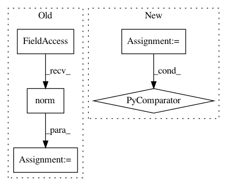

66533e85c0f2caab50aba671ee9c8adc6a38c528,flow/core/kernel/vehicle/aimsun.py,AimsunKernelVehicle,get_headway,#AimsunKernelVehicle#Any#Any#,546
Before Change
// assume Euclidean distance
leader_pos = self.get_position_world(leader_id, error)
veh_pos = self.get_position_world(veh, error)
dist = np.linalg.norm(
np.array(leader_pos)-np.array(veh_pos))
gap = dist - self.get_length(leader_id, error)
headways.append(gap)
// TODO check this for the better way
// if inf_leader.idSection != inf_veh.idSection:
After Change
def get_headway(self, veh_id, error=-1001):
See parent class.
if isinstance(veh_id, (list, np.ndarray)):
return [self.get_headway(veh, error) for veh in veh_id]
return self.__vehicles[veh_id]["headway"]
def get_last_lc(self, veh_id, error=-1001):
In pattern: SUPERPATTERN
Frequency: 4
Non-data size: 5
Instances
Project Name: flow-project/flow
Commit Name: 66533e85c0f2caab50aba671ee9c8adc6a38c528
Time: 2018-12-29
Author: akreidieh@gmail.com
File Name: flow/core/kernel/vehicle/aimsun.py
Class Name: AimsunKernelVehicle
Method Name: get_headway
Project Name: probcomp/bayeslite
Commit Name: 2e6b56ce989ddb63bd367d13373a3ec1d190fac6
Time: 2015-08-28
Author: axch@mit.edu
File Name: src/iid_gaussian.py
Class Name: StdNormalMetamodel
Method Name: logpdf
Project Name: rail-berkeley/softlearning
Commit Name: 5c6c420783b95425cef7648a589785d3ab668b5c
Time: 2018-05-22
Author: kristian.hartikainen@gmail.com
File Name: examples/mujoco_all_sac_lsp.py
Class Name:
Method Name:
Project Name: rtavenar/tslearn
Commit Name: 46cb0b5b2cf2d836a2cf96be95d4e25a4004675e
Time: 2018-10-22
Author: guillaume.androz@gmail.com
File Name: tslearn/clustering.py
Class Name: KShape
Method Name: _fit_one_init